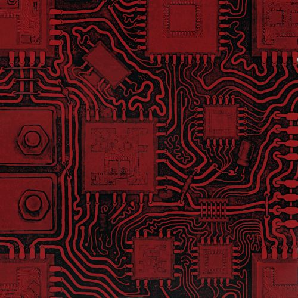

About Me
I'm Wajan Albaqami, a Computer Science student at Qassim University, passionate about coding, web design, and cybersecurity — diverse fields that come together to build secure and impactful digital experiences.
I enjoy tackling creative challenges that blend logic, design, and security. Whether it's writing clean code, crafting intuitive user interfaces, or strengthening digital infrastructure, I strive to develop smart and secure technology.
I'm also interested in Game Programming 🎮, where creativity meets code to bring interactive ideas to life.
For me, technology isn’t just a tool—it is a canvas for storytelling, design, and innovation.
Personal Details
Date of Birth: 22 Mar 2002
Nationality: Saudi
Marital Status: Single
Languages
Arabic: Native
English: Very Good